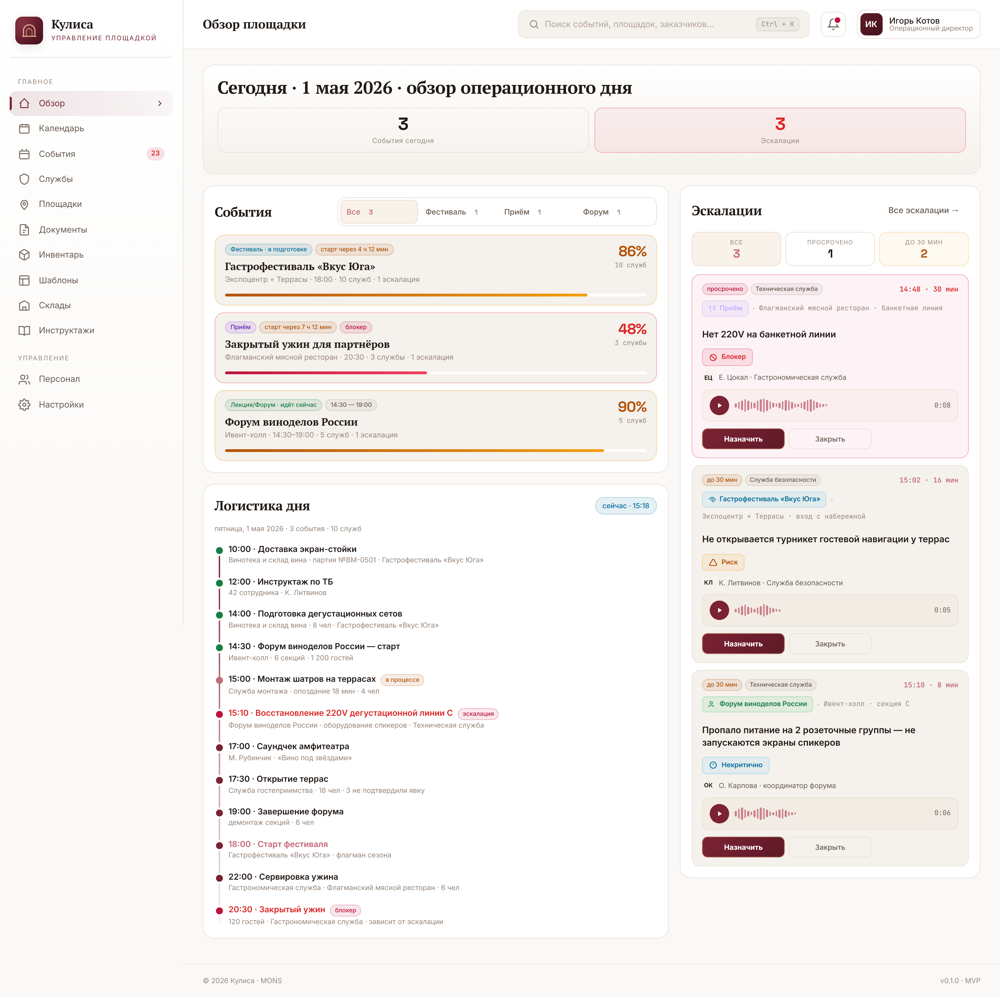
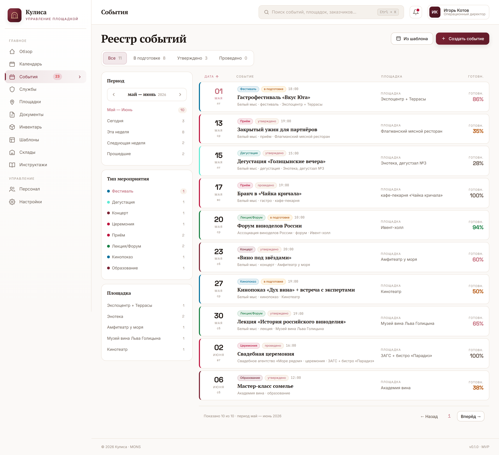
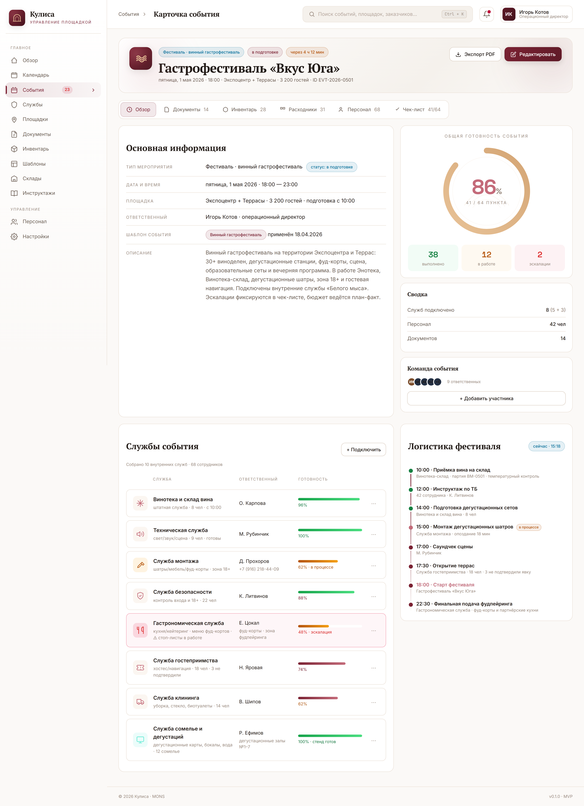
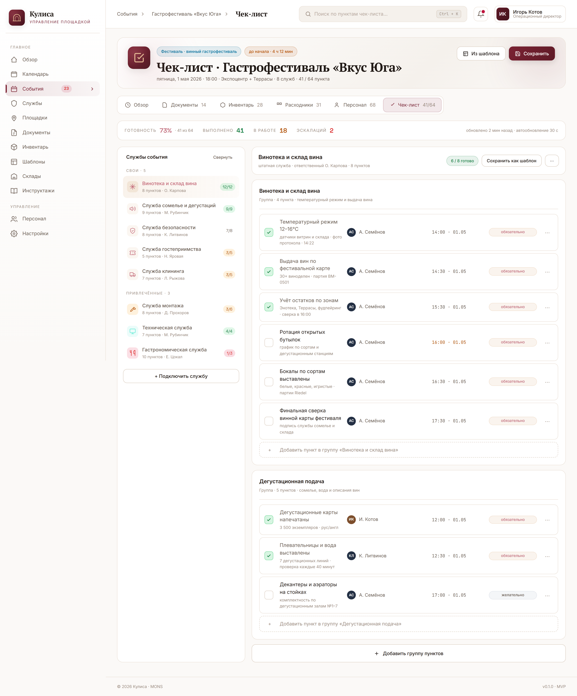
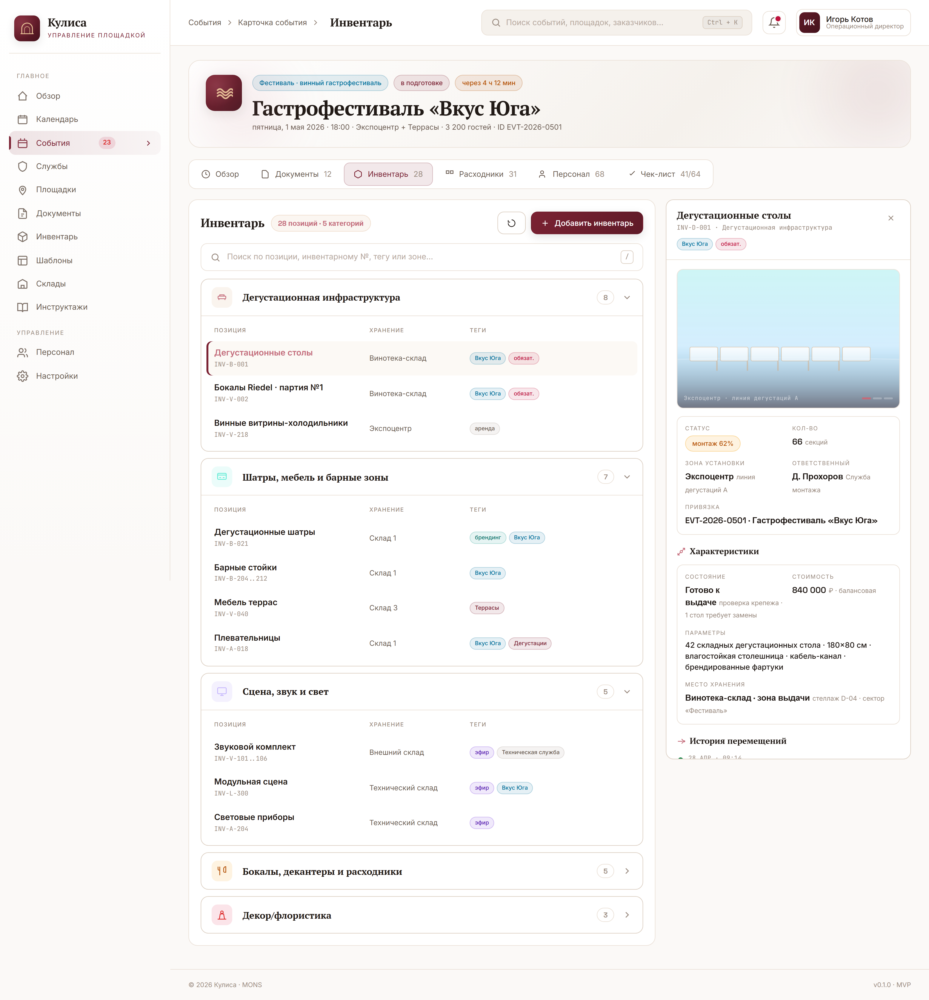
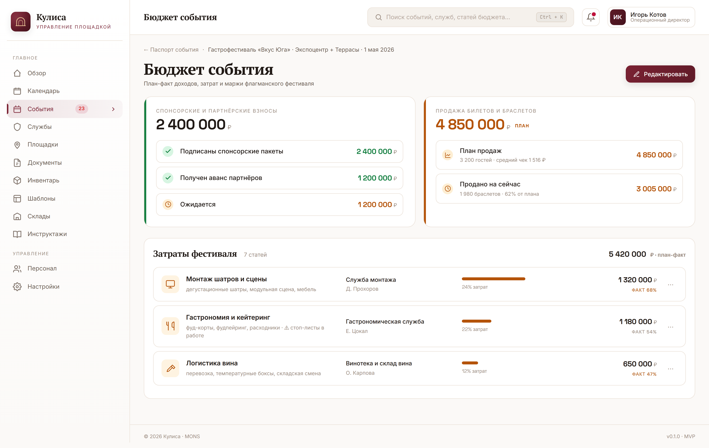

Управляющие и директора событийного направления
Видят полный календарь событий «Белого мыса», готовность по каждому мероприятию и службам, экономику в моменте. Держат всю площадку в одном фокусе — от дегустации до фестиваля.
«Белый мыс» — это больше, чем просто пространство. Винный город, выставочный комплекс, концертная площадка, гастрономическое пространство объединяет одна задача: провести мероприятие так, чтобы гости остались в восторге, а вы были абсолютно спокойны. Каждое событие на площадке «Белый мыс» требует чёткой координации служб, контроля готовности и бесшовной коммуникации. Наша система собирает всё в единый центр управления вашим пространством.
Для кого
«Кулиса» обеспечивает безопасность, качество и сервис каждого события на «Белом мысу», объединяя в одной среде все службы, инвентарь и инструктажи — будь то дегустация, фестиваль, концерт или церемония.
Видят полный календарь событий «Белого мыса», готовность по каждому мероприятию и службам, экономику в моменте. Держат всю площадку в одном фокусе — от дегустации до фестиваля.
Получают чек-лист на смену в мобильном приложении, отмечают выполнение, эскалируют проблемы — без созвонов и распечаток. Всё, что нужно для работы винного города, под рукой.
Контролируют работу подрядчиков и штатных служб по чек-листам, ведут примечания и оценки — чтобы стандарт гостеприимства и сервиса «Белого мыса» не падал от события к событию.
Что внутри
БольРуководитель «Белого мыса» тратит часы на сбор информации из чатов, звонков и бумажных сводок — что готово к открытию дегустации, кто не вышел на смену, какие проблемы на монтаже шатров.
Решение «Кулисы»Оставайтесь в повестке в моменте. На одном экране: события дня с готовностью, логистика по часам и открытые эскалации служб винного города. Никаких переключений.

БольНа «Белом мысу» — несколько событий одновременно: гастрофестиваль, винная дегустация и концерт под открытым небом. А завтра — церемония и закрытый вечер для партнёров. Двойные бронирования и конфликты зон стоят денег: к 15 часам нужно развернуть фуд-корты и дегустационные шатры, а к 19 — уже другая рассадка, сцена и требования к звуку.
Решение «Кулисы»Ваш день, неделя, месяц — по типам мероприятий, числу гостей, локациям на карте «Белого мыса» и функциональным зонам. Цветовая навигация, готовность по дням, занятость шатров, открытых террас и залов, график вызова служб и персонала. Всё, чтобы винный город работал как часы.
БольДесятки мероприятий в работе одновременно — как понять, какие уже утверждены, какие в подготовке, а какие просрочены?
Решение «Кулисы»Все события в едином окне — с фильтрами по дате, типу и статусу: в подготовке, утверждено, проведено. Видно, какие события сейчас в работе и какие запланированы.

БольИнформация о мероприятии размазана по десятку документов, писем и чатов. Проектные документы, схемы рассадки, списки вин и поставщиков — кто-то хранит в папке на рабочем столе, кто-то в распечатках за прошлый фестиваль. Найти последнюю версию сметы или контакты подрядчика по кейтерингу — целый квест.
Решение «Кулисы»Единая карточка события на «Белом мысу»: подробное описание формата, задействованные службы, персонал, инвентарь (шатры, мебель, посуда), документация, расходники, бюджет. Весь контекст мероприятия — от винной карты до графика вывоза мусора — на одном экране.

БольПодготовка к гастрофестивалю включает 200+ пунктов — электрика, дегустационные шатры, охрана, клининг, кейтеринг, монтаж сцены. Как убедиться, что всё сделано, и кто за что отвечает?
Решение «Кулисы»Подготовка по службам, обязательные пункты по регламенту, сроки и ответственные. Просрочки и эскалации видны сразу — без поиска по чатам.

БольМногочисленные службы и персонал на каждом событии. У кого какая загрузка? Кто хорошо работает, а кто срывает сроки?
Решение «Кулисы»Все подразделения — в одном реестре. Загрузка каждой службы, зоны ответственности, наглядная исполнительность по чек-листам и примечания от руководителей. Вы всегда видите, кто работает хорошо, а кому нужна помощь. Без хаоса и простоев.
БольМножество зон на «Белом мысу» — винотека, шатры, террасы, залы, Музей вина — и сложная координация монтажа, когда перестроить пространство нужно быстро или несколько раз за день. Excel, обзвон ответственных — потеря времени и контроля.
Решение «Кулисы»Загрузил карту → отметил зоны кликом → все трансформации площадок и зон всегда под рукой. Иерархия, фильтрация, поиск. Перестройка дня — без ошибок.
БольОборудование «уплывает» между зонами и мероприятиями. Где дегустационные столы, кто забрал витрины для бутылок, куда делись световые приборы с прошлого фестиваля и когда их вернут. А нужные бокалы так и не доставили после церемонии?
Решение «Кулисы»Учёт оборудования площадки — от мебели и световых приборов до звуковой аппаратуры и витрин. По каждой позиции: состояние, параметры, стоимость, место хранения, ответственный сотрудник и привязка к конкретному событию «Белого мыса». История перемещений и статусов — без поиска по чатам и таблицам.

БольМероприятие прошло, а сколько на него реально потратили и заработали? Данные разбросаны по таблицам Excel и десяткам окон бухгалтерской программы.
Решение «Кулисы»Быстрый взгляд на финансовую эффективность конкретного события на «Белом мысу» — план-факт в реальном времени. Никакого Excel. Только цифры сразу после проведения.

БольХаос в рациях, звонках и бумажках при подготовке события. Начальник службы не может оперативно подтвердить готовность или поднять проблему.
Решение «Кулисы»Начальник службы проходит по чек-листу в телефоне — подтверждает готовность или эскалирует проблему. Руководитель видит статус онлайн в реальном времени, не дожидаясь звонка или бумажного отчёта.
Экономика внедрения
Что меняется на дистанции одного сезона работы «Белого мыса» в Кулиса.
Контакты
Кулиса — продукт компании MONS. Платформа для комплексного управления организацией событий на площадке «Белый мыс».